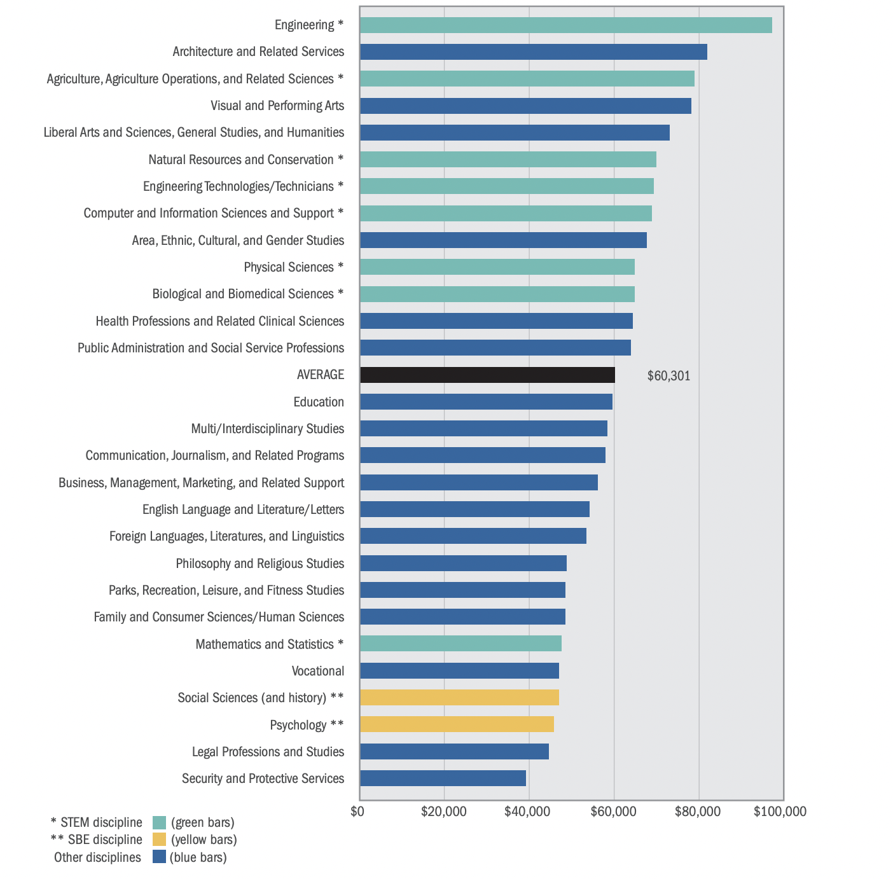

Test Article

being able to afford to go into the career you want is very important for people educational freedom and their future financial freedom
a big barrier to pursuing STEM education is how expansive it is so they won't be able to get the degree without takeing on a huge amount of debt.
This impacts who can't get STEM degrees as people in high income households can easily afford tuition but for people in lower income households they might not be able to afford it and they don't want to take on a huge amount of debt
perhaps the greatest barrier for gating into STEM is not having important classes in schools needed for STEM fields. For example in rural schools half of all students don't have access to calculus, 4/10 don't have access to physics, 1/4 schools don't offer chemistry and 1/5 does not even offer algebra 2.
this mainly affects people who don't have the economic freedom to be able to go to a school that offers these classes. instead they are stuck in a school that does not give them the economic freedom to be able to pursue all types of careers.
government's mission statement for getting more stem in schoolthis talks about why it is important to get STEM to everyone and introduces there 5 year plan for getting STEM to more people across the us